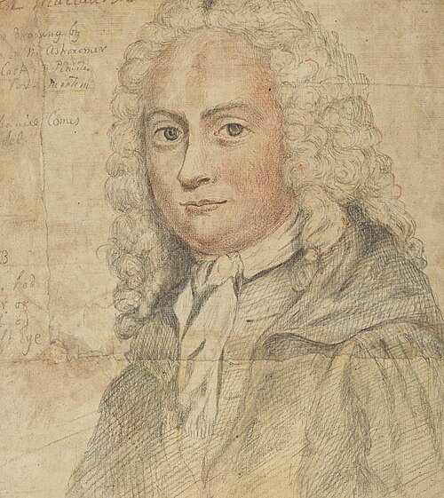

1698–1746
Scottish
Calculus, geometry, gravitational theory
Maclaurin was a prodigy. He entered the University of Glasgow at 11 and was appointed professor of mathematics at the University of Aberdeen at 19 — the youngest professor in history at the time. Newton himself recommended Maclaurin for the chair of mathematics at Edinburgh in 1725, personally offering to supplement his salary.
His Treatise of Fluxions (1742) was written partly in response to Bishop Berkeley's famous attack on the logical foundations of calculus (The Analyst, 1734). Berkeley had mocked infinitesimals as "ghosts of departed quantities." Maclaurin responded with a systematic treatment of limits and series that, while still short of modern rigour, was the most careful presentation of calculus until Cauchy's Cours d'analyse nearly a century later.
The "Maclaurin series" — the Taylor series centred at $a = 0$ — bears his name because he popularised and systematically used the $a = 0$ case in the Treatise. The general result was already known to Taylor (1715) and even to the Kerala mathematicians centuries earlier. Maclaurin never claimed originality for the series formula; his contribution was in demonstrating its power as a computational tool.
Maclaurin also made important contributions to gravitational theory, proving results about the equilibrium shape of rotating fluid bodies. He organised the defence of Edinburgh during the Jacobite rising of 1745, personally supervising the construction of fortifications. The exertion ruined his health, and he died the following year at 48.
| Phase | Page | Referenced for |
|---|---|---|
| Phase 4 | Taylor's Theorem | Popularised the $a = 0$ case in Treatise of Fluxions (1742) |